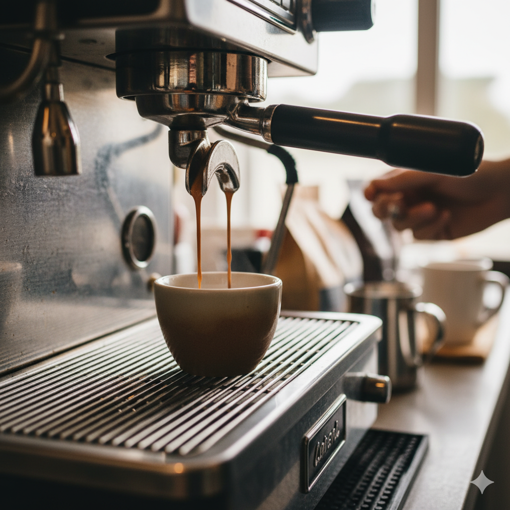

Nejnovější příspěvky

Kávová etiketa ve světě: Jak pít kávu v Itálii, Turecku a Skandinávii
Číst dálVíce z blogu

Rozluštění tajemství zrn: Rozdíl mezi Arabikou a Robustou
Proč je jedno zrno ovocné a komplexní, zatímco druhé dodává espresso směsím sílu a hořkost? Rozdíl není jen v chuti, ale i v botanice, ceně a obsahu kofeinu, který funguje jako přírodní insekticid. Porovnáme dva hlavní kávové druhy, abychom vám usnadnili výběr zrn pro váš dokonalý šálek, ať už preferujete jemnost, nebo maximální "kopanec".
Číst dál
Jak prodloužit životnost kávovaru: Komplexní průvodce čištěním a odvápněním
Kvalita kávy úzce souvisí s hygienou stroje. Pravidelná a správná údržba kávovaru není jen o záruce a životnosti, ale především o chuti – usazené kávové oleje, vodní kámen a zbytky mléka dokáží znehodnotit i ta nejkvalitnější zrna.
Číst dál
Jak na dokonalou filtrovanou kávu doma: Průvodce V60/Chemex
Filtrovaná káva zažívá renesanci, protože jejím cílem je dosáhnout čistoty, jemnosti a plného chuťového profilu zrn. Je to metoda, která nejlépe zvýrazní ovocné a květinové tóny jednodruhových káv. Proces je minimalistický, ale vyžaduje přesné pochopení poměrů a techniky zalévání.
Číst dál

Dokonalé espresso v pohodlí domova: Průvodce krok za krokem
Espresso je mnohem víc než jen „silná káva“. Je to koncentrovaný nápoj plný chuti, aroma a textury, který tvoří základ většiny kávových specialit. Jeho příprava je kombinací umění a vědy, která vyžaduje pochopení tlaku, teploty a času. Mnoho lidí si myslí, že k dobrému espressu stačí jen drahý kávovar, ale nejdůležitějším faktorem je ve skutečnosti kvalitní mlýnek, čerstvost suroviny a vaše preciznost.
Číst dál